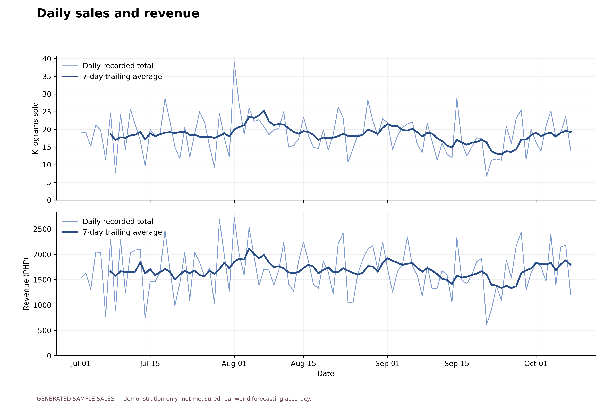
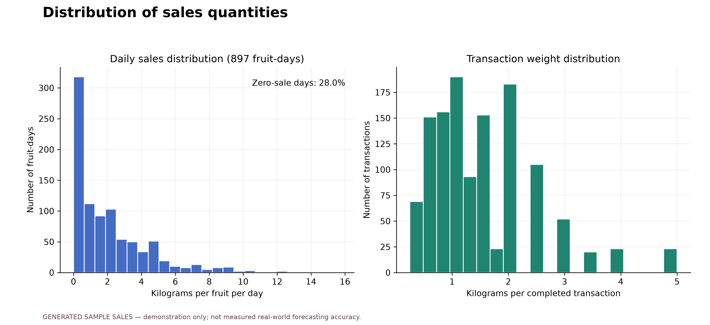
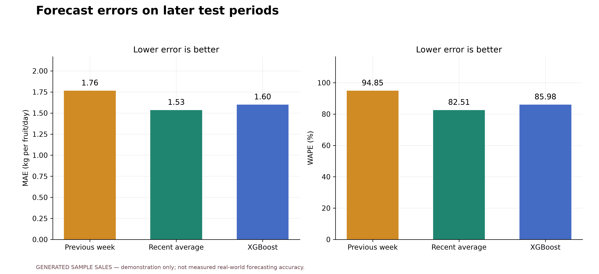
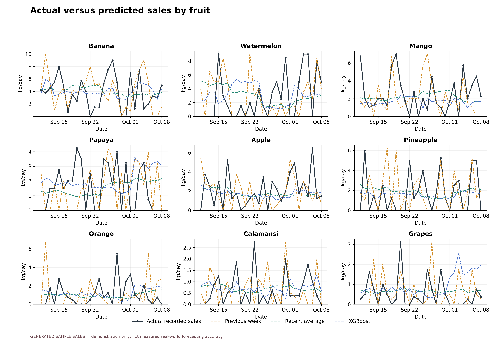
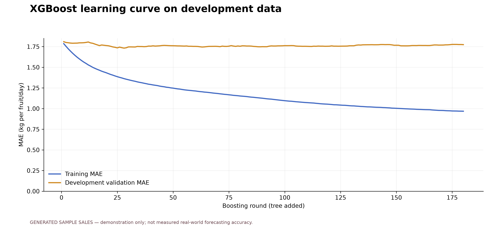
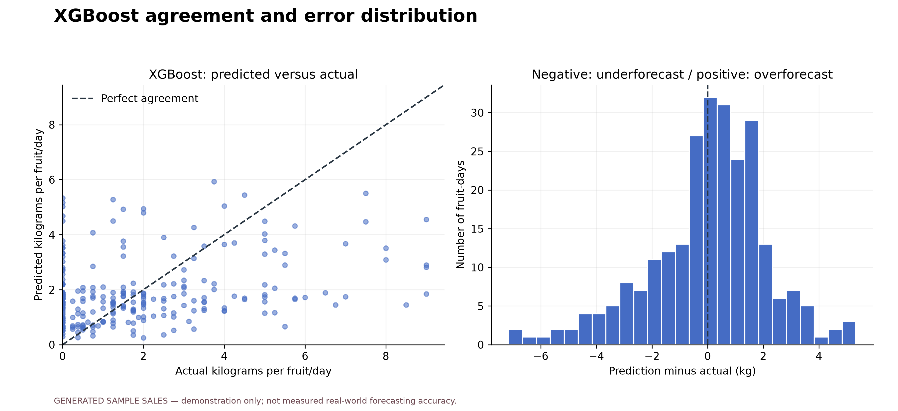

FruityVens: sales analysis and forecast evaluation
GENERATED SAMPLE SALES — demonstration only; not measured real-world forecasting accuracy.
1,241 completed transactions · 9 fruits ·
2026-07-01 to 2026-10-08
Later test period: 2026-09-11 to 2026-10-08, evaluated in
4 successive 7-day forecast blocks. Development-selected method:
Recent average. Lower errors are better.
Download all figures (PDF) · Prediction data (CSV) ·
Methodology and interpretation · Run metadata
Model parameters and selection use development data. Training is repeated before each later block.
The learning curve is a separate one-day-ahead diagnostic. Generated sales cannot establish real vendor accuracy.Daily sales and revenue

Completed transactions only. Weight and revenue are separate measures; the trailing average summarizes past sales.
Download figure PDF
Distribution of sales quantities

Left: daily fruit sales, including assumed zero-sale dates. Right: basket weights from individual transactions.
Download figure PDF
Average sales by day of week

An exploratory summary of the available period; differences do not establish a causal weekday effect.
Download figure PDF
Forecast errors on later test periods

All methods predict the same fruit-days with a recursive seven-day horizon. Errors are computed before rounding; these are test scores, not training scores.
Download figure PDF
Actual versus predicted sales by fruit

Forecasts are issued in separate seven-day blocks with a one-day bridge. Models refit before each block; actual values within a block never become recursive forecast inputs.
Download figure PDF
XGBoost learning curve on development data

One-day-ahead diagnostic: validation features use earlier observed sales. This is not the recursive seven-day test score; the final test period is excluded entirely.
Download figure PDF
XGBoost agreement and error distribution

A point near the diagonal indicates close agreement. Signed errors show the direction of misses; opposite errors do not cancel in MAE or WAPE.
Download figure PDF